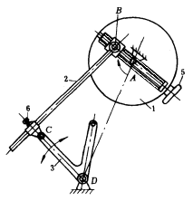
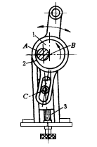
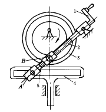
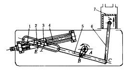

机构示意图
机构特性简介
曲柄连杆长度可调机构

曲柄摇杆机构ABCD的曲柄和连杆长度都可用螺旋调整。主动圆盘1上装有调节螺旋5可改变曲柄销B的位置，即改变曲柄AB的长度。连杆BC与摇杆CD以杆套和紧固螺钉6连接，旋松螺钉6可调节连杆长度，随后将6紧固。由于曲柄和连杆长度的改变，结果调节了摇杆3的摆动行程与位置。
滑槽连杆调节机构

主动偏心轮1绕固定轴A转动，即以AB作曲柄带动滑槽连杆2 作平面复杂运动。旋转调节螺钉3可改变滑销C的位置，结果改变连杆2的摆动范围与运动规律。
摆杆长度可调的凸轮机构

主动偏心凸轮3上设有环形槽与摆动从动件2上的滚子B接触，通过滚子带动2作摆动，并以2杆端的铰链A与滑块5来驱动从动件4作上下移动。 摆杆2是螺杆，它与滚子外侧固联的螺母相配合，当旋转手柄1时，可用螺旋改变AB的长度，以此来调整从动件4的移动行程和运动规律。
行程可调的导杆机构

滑块2与定滑块3铰接于E点，定滑块3的位置由螺杆4调节，使3在固定导轨1中移动，从而改变滑块2在导杆5中的相对位置，实现对活塞7行程的调节。